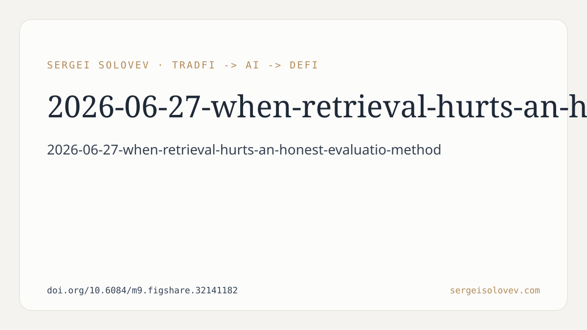

At Honest Arbiter, we systematically investigate claims and methodologies, especially those prevalent in high-impact domains. Our recent preprint, "When Retrieval Hurts: An Honest Evaluation of RAG for Solidity Vulnerability Detection," exemplifies this approach by scrutinizing Retrieval-Augmented Generation (RAG) within the context of identifying vulnerabilities in Ethereum Solidity smart contracts. This post details the methodological choices and their rationale, providing a grounded understanding of our investigation.
The core problem we address is multi-label vulnerability detection in Solidity smart contracts. This means a given contract can exhibit multiple types of vulnerabilities. Our objective was to evaluate RAG's efficacy in this specific, multi-label domain.
To achieve a comprehensive evaluation, we designed a hybrid pipeline for vulnerability detection. This pipeline was structured to isolate and assess the contributions of different components. It consists of three main stages:
1. **Regex-based Heuristic Pre-screening:**
* **Design:** This initial stage employs regular expression-based heuristics.
* **Rationale:** The purpose of pre-screening is to quickly identify potential vulnerabilities based on established patterns. Heuristics are inherently rule-based and can serve as a strong baseline, often capturing common vulnerabilities efficiently. Including this stage allows us to compare more complex LLM-based approaches against a simpler, well-understood method. It also acts as an initial filter, potentially reducing the workload for subsequent stages.
2. **Dense Retrieval over a Labeled Knowledge Base (KB):**
* **Design:** This component involves retrieving relevant information from a pre-built, labeled knowledge base. "Dense retrieval" implies using embedding-based similarity search, where both the query (the smart contract or parts of it) and the knowledge base entries are represented as dense vectors.
* **Rationale:** This is the "R" in RAG. The idea is that providing a Large Language Model (LLM) with relevant contextual information from a specialized knowledge base can improve its performance. For vulnerability detection, this contextual information might include descriptions of known vulnerabilities, examples of vulnerable code patterns, or remediation advice. Our labeled KB is crucial for ensuring that retrieved information is directly pertinent to vulnerability classes. We specifically designed this as a dense retrieval step to leverage the semantic understanding offered by modern embedding models, moving beyond simple keyword matching.
3. **Two-stage LLM Classifier (Judge + Verify):**
* **Design:** The final classification stage uses an LLM in a two-stage process: "judge" followed by "verify."
* **Rationale:**
* **LLM as Classifier:** LLMs have demonstrated strong capabilities in text understanding and classification. Applying them here allows us to leverage their ability to reason about code and vulnerability descriptions.
* **Two-Stage Approach (Judge + Verify):** This design choice reflects a common architectural pattern for robust LLM-based systems. The "judge" stage likely provides an initial assessment or set of labels. The "verify" stage then reviews or refines these initial judgments, potentially incorporating additional context or applying a more stringent set of criteria. This iterative refinement is intended to improve the accuracy and reliability of the final classification, mitigating potential errors from a single pass. For multi-label classification, this two-stage process can be particularly beneficial for handling dependencies or contradictions between different vulnerability labels.
To rigorously evaluate RAG, we benchmarked three distinct configurations on the SolidiFI benchmark across six vulnerability classes:
1. **Heuristic-Only:**
* **Design:** This configuration relies solely on the regex-based heuristic pre-screening stage.
* **Rationale:** This serves as a foundational baseline. It establishes the performance achievable with a simple, deterministic, and interpretable method. Any improvements observed from LLM-based approaches must exceed this baseline to demonstrate value beyond basic pattern matching.
2. **LLM-Only:**
* **Design:** This configuration uses only the two-stage LLM classifier, without any retrieval component.
* **Rationale:** This baseline allows us to assess the inherent capability of the LLM for vulnerability detection. By excluding retrieval, we can isolate the performance attributable to the LLM's pre-trained knowledge and its ability to generalize from prompt instructions. This is crucial for understanding whether RAG genuinely *adds* to the LLM's capabilities or simply provides redundant information.
3. **LLM+RAG:**
* **Design:** This configuration integrates both the dense retrieval over the labeled KB and the two-stage LLM classifier.
* **Rationale:** This is our primary target configuration for evaluating RAG. By comparing it directly to "LLM-Only," we can measure the impact of the added retrieval step. This configuration represents a typical RAG implementation where information from a knowledge base is retrieved and fed to the LLM.
One of our key methodological contributions directly relates to the importance of sample size in evaluation.
* **Small Evaluation Set (n=100):** On a smaller evaluation set, we observed that RAG appeared to improve Macro-F1 by +2.0% over a plain LLM. This result, superficially, aligns with commonly reported gains in the literature, which often present results from limited evaluation sets.
* **Robust Evaluation (n=250):** However, increasing the sample size to a more robust evaluation set revealed a different picture: the same RAG configuration degraded Macro-F1 by -2.7% compared to the plain LLM.
**Rationale for this comparison:** This deliberate comparison of sample sizes is critical for honest evaluation. It demonstrates that seemingly positive results on small datasets can be misleading and statistically unstable. Small samples are prone to random variations and might accidentally favor certain configurations. A larger, more robust evaluation set provides a more reliable measure of a model's true performance and its generalization capabilities. Our methodology highlights the necessity of robust evaluation design to avoid propagating anecdotal or statistically insignificant findings.
Beyond the RAG evaluation, our work also involved optimizing other components:
* **Heuristic Tuning and Prompt Engineering:** Careful refinement of the heuristics and the prompts given to the LLM yielded a substantial +15% F1 improvement over the initial heuristic-only baseline.
* **Rationale:** This demonstrates that even without RAG, significant performance gains can be achieved through meticulous engineering of individual components. This is a statistically stable improvement, contrasting with the fickle nature of the RAG gains on smaller datasets. It emphasizes that basic optimization efforts can often be more impactful than adding complex architectural elements without careful consideration.
Our findings suggest that "naive RAG," as implemented with generic embeddings and whole-contract chunking, provided no measurable benefit for Solidity vulnerability detection and, under more robust evaluation, actively harmed performance. We attribute this to a noisy retrieval signal. This implies that the retrieved information, instead of being helpful context, introduces irrelevant or confusing data to the LLM, leading to performance degradation.
Our work concludes by outlining directions for domain-adapted RAG that could potentially unlock its promised benefits. These include:
* **Fine-tuned Embeddings:** Tailoring embedding models specifically for the Solidity domain, rather than relying on generic ones, could produce more relevant and less noisy retrieval signals.
* **Cross-encoder Re-ranking:** Adding a re-ranking step using cross-encoders could further filter retrieved documents, ensuring higher quality information reaches the LLM.
* **AST-aware Chunking:** Instead of splitting contracts arbitrarily ("whole-contract chunking"), leveraging Abstract Syntax Trees (ASTs) for more semantically meaningful chunking could provide the LLM with focused and contextually rich snippets.
These proposed directions are grounded in the observation that the issue isn't necessarily RAG itself, but its implementation in a generic, "naive" manner for a highly specialized domain like smart contract vulnerability detection. Our methodology was specifically designed to surface these limitations and guide future, more targeted research.
Full preprint: https://doi.org/10.6084/m9.figshare.32141182